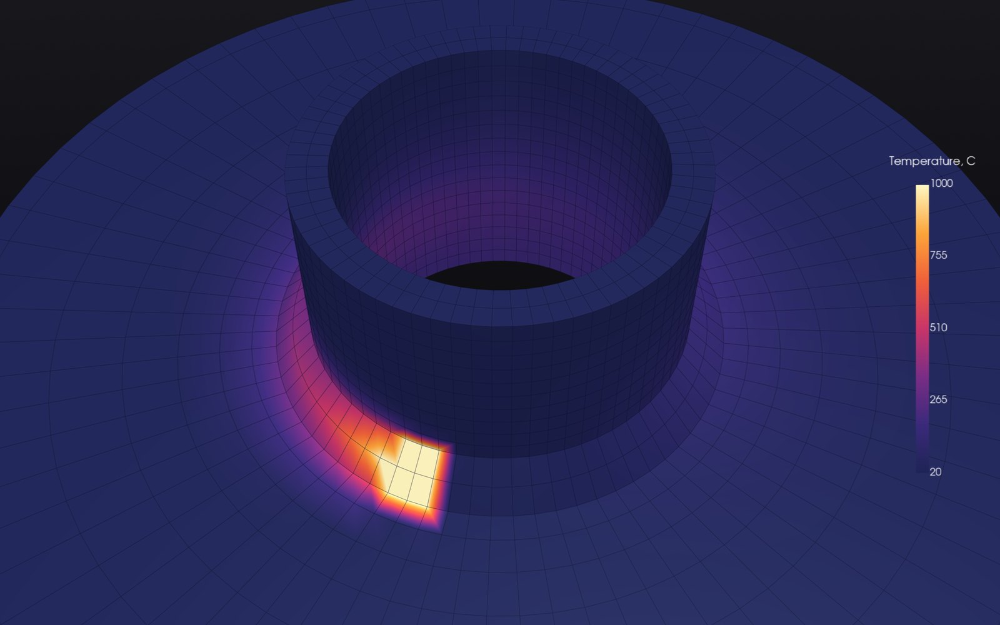
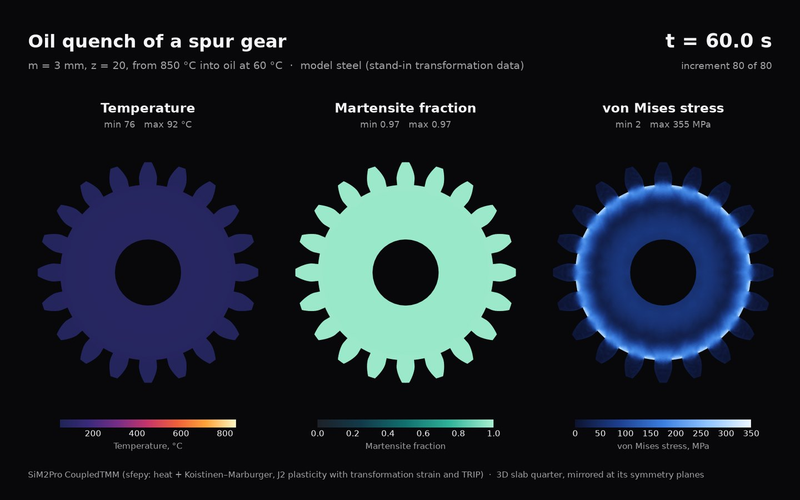
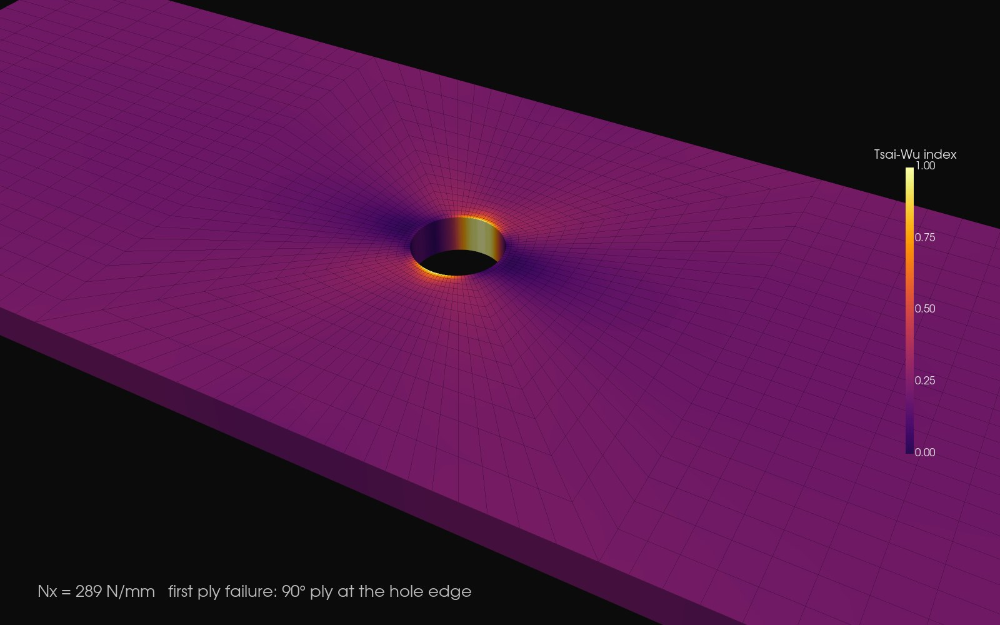
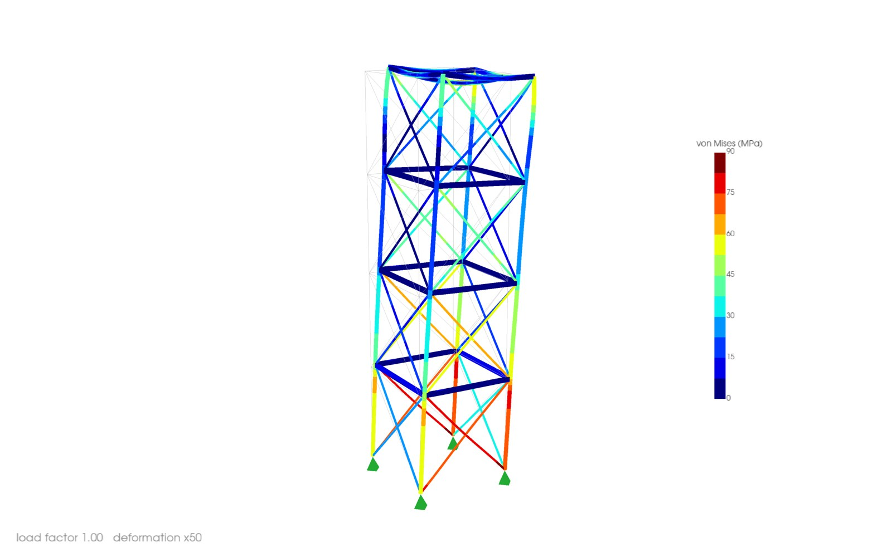
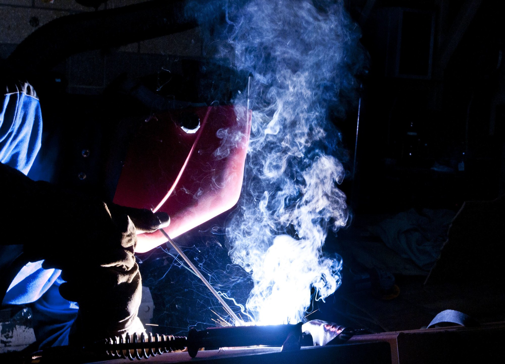

Simulate the process.
Trust the part.
SiM2Pro is finite element software for welding, heat treatment, metallurgy and composites. Use it yourself, or hand us the case.






Demonstrations with assumed data. Thermodynamics is OpenCalphad's result, run through a separate tool while SiM2Pro's CALPHAD interface is in development. Microstructure is MMSP's, a separate study, not part of MetaPro. Fluid flow is OpenFOAM's cavity tutorial.
One platform. Four process products.
SiM2Pro is the workbench. Add the product your process needs.
SiM2Pro Platform
CAD, mesh, set-up, solve and results in one studio. Every action is recorded as a script, and an AI agent can drive it.
See the platform


WeldPro Welding
Moving heat sources along a weld path, with the bead laid as the torch passes.
See WeldPro
HTPro Heat treatment
Quenching and carburizing: cooling, phases, stress and distortion.
See HTPro
MetaPro Metallurgy
CCT diagrams from composition, critical temperatures and dilatometry.
See MetaPro
MatPro Composites
Fibre and matrix to ply, laminate and failure, in one product.
See MatPro
No time to run it yourself? Send us the case.
The people who write the software run the studies. You get the answer and the model that produced it.
- ConsultingSimulation studies. Nonlinear FE, manufacturing, multiscale materials, CFD, optimisation, CAD.
- TrainingYour team, running its own studies. Built around your parts and your process.
- TestingPhysical tests that feed the model. Mechanical and thermal tests with a partner laboratory.
Honest numbers, printed every release.
Three rows from the benchmark registry.
| Benchmark | Quantity | Computed | Reference | Error |
|---|---|---|---|---|
| C01 Constrained plate, uniform heating | In-plane stress | −359.99 MPa | −360.00 MPa | 0.004 % |
| C02 Copper / invar strip heated by 100 K | Tip deflection | 5.793 mm | 5.709 mm | 1.47 % |
| L03 Cantilever, tip load 1 MN | Tip deflection | 19.063 mm | 19.048 mm | 0.08 % |
Tell us about your part.
The part, the process, the question. We reply with what a study would take and what it would show.